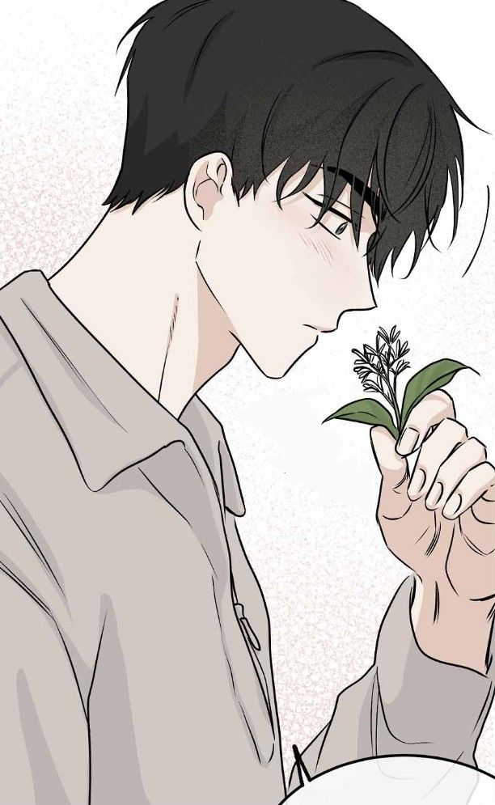
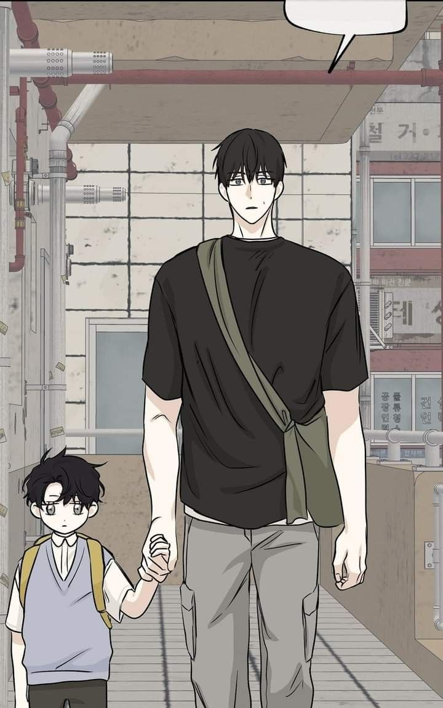

Mi personaje de manhwa favorito
Do Haesung (도해성) es un personaje secundario de Marea baja en el crepúsculo (Low Tide in Twilight). Es vecino de Kim Euihyun y Kim Euiyoung y estudia Farmacia en una universidad prestigiosa. Tiene 24 años y mide aproximadamente 188 cm.
Desde su primera aparición se convirtió en una presencia clave dentro de la trama, ganándose el cariño de los lectores por su forma de enfrentar los conflictos de la historia.

Haesung es alto, de complexión delgada y apariencia juvenil. Tiene el cabello oscuro y una expresión generalmente tranquila y amable. Su aspecto transmite una personalidad más accesible que la de varios personajes de la obra.
Estos son algunos rasgos que definen a Haesung a lo largo de la historia:

Su nombre completo es Do Haesung. Tiene 24 años. Mide 188 cm. Estudia Farmacia. Vive al lado de Euihyun y Euiyoung. Es considerado por muchos lectores como uno de los personajes más amables de la obra; incluso ha sido descrito como una especie de “green flag” frente a otros personajes. Algunos sitios de tipología lo clasifican como ISFJ, aunque esto no es una clasificación oficial de la autora.
Para que puedas conocer más sobre esta historia, puedes visitar los siguientes sitios: